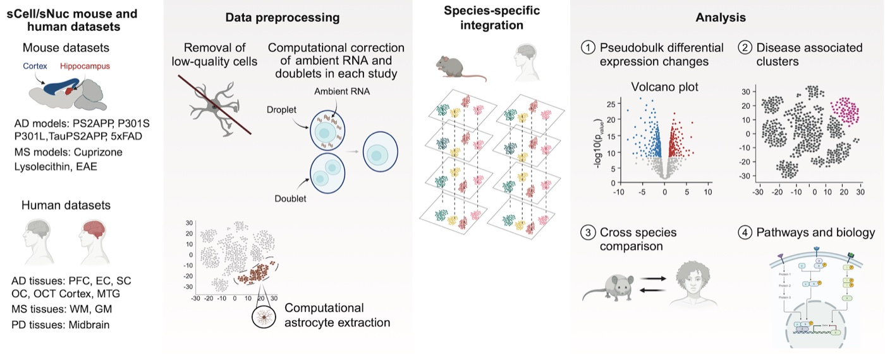

Glia in neurodegeneration
Astrocyte heterogeneity, disease-associated subtypes and the integrated stress response across Alzheimer's, Parkinson's and MS, conserved from mouse models to human tissue.
Computational Biologist · Ph.D., Stanford
I use AI/ML on single-cell and spatial multi-omic data to find targets, biomarkers and patient subgroups in neurodegeneration and immunology. Most of my work is on glial biology.
Senior Scientist, Translational Data Science at Calico Life Sciences
01 — About
I'm a computational biologist with a Ph.D. in Neurosciences from Stanford. At Calico Life Sciences I lead single-cell meta-analyses of glial stress across Parkinson's, Alzheimer's and multiple sclerosis cohorts. The aim is to find biomarkers, define patient subgroups and judge whether a therapeutic target is worth pursuing.
Before Calico, I built and benchmarked AI tools for single-cell and spatial analysis. At LatchBio that meant reinforcement-learning environments and evaluation harnesses for analysis agents. At Chan Zuckerberg Biohub I led development of AI Workspace, a no-code platform for scRNA-seq analysis. As a postdoc at Genentech, I built a cross-disease atlas of human and mouse astrocytes and led the lab's spatial transcriptomics pipelines.
I work closely with wet-lab scientists so that a computational finding leads to an experiment. I've also spent years teaching and mentoring, and helping build programs that widen who gets to do science.
Ph.D., Neurosciences
Stanford University School of Medicine, 2021
Advisor: Marion Buckwalter
B.A., Psychology (Honors)
California State University, Northridge, 2014
Student-athlete, Track & Field
Nature Neuroscience
Journal of Clinical Investigation
Glia
San Francisco Bay Area, CA
02 — Research focus
Astrocyte heterogeneity, disease-associated subtypes and the integrated stress response across Alzheimer's, Parkinson's and MS, conserved from mouse models to human tissue.
scRNA- and scATAC-seq, 10x Multiome, CITE-seq and Perturb-seq, plus spatial platforms (Visium, Xenium, MERFISH), integrated at atlas scale.
Benchmarking and evaluation design, RL environments and reward design for analysis agents, and checking that AI output holds up against bioinformatic ground truth.
Target prioritization, biomarker discovery and patient stratification, framed as explicit go/no-go criteria that program teams can act on.
03 — Experience
Calico Life Sciences
LatchBio
Chan Zuckerberg Biohub
Genentech · OMNI Bioinformatics
Genentech, Inc.
Buckwalter Lab, Stanford Neurology
McClure Lab, Stanford (GABA & decision-making, fMRI) · Tonyan Lab, CSU Northridge (child development)
04 — Publications
Full list on Google Scholar.

A meta-analysis of astrocytes across Alzheimer's, MS and Parkinson's that identifies disease-associated subtypes (DAA1, DAA2), validated across species. In mice they sit near amyloid plaques; in humans they are enriched in MS lesions.
bioRxiv (preprint)
bioRxiv · in revision at Nature Neuroscience
Journal of Neuroinflammation 19:105
Translational Stroke Research 12(2):331–346
05 — Resources & code
Interactive · Shiny
Look up gene scores across human and mouse astrocyte subtypes from the cross-disease atlas. There are separate human and mouse apps.
R · Reproducible analysis
Analysis code for the atlas manuscript: integration, disease-associated cluster calling, pseudobulk DE and cross-species comparison.
Snakemake · Docker
FASTQ → Cell Ranger → CellBender → scDblFinder → Seurat QC, with clustering, markers and output to Seurat, SCE or AnnData.
Single-cell multiome
Joint scRNA + scATAC analysis of normal and IPF lung fibroblasts under OSM, TGF-β and IL-13 to study epigenetic priming.
cfDNA · Methylation
Fragment size, end-motif and coverage features from cfDNA WGBS, fed into a classifier that separates ALS from control samples.
GitHub
Spatial (Visium) analyses, perturb-seq processing, proteomics and other projects.
R · Python · Bash/Linux · MATLAB
scRNA-seq · scATAC-seq · 10x Multiome · CITE-seq · Perturb-seq / CROP-seq · Visium · Xenium · MERFISH · WGBS
Atlas integration · pseudobulk DE · PyTorch · scikit-learn · TensorFlow · Seurat · Bioconductor · scanpy
Snakemake · Nextflow · Docker · Google Cloud Batch · AWS · HPC · Shiny · git
06 — Teaching, service & honors
07 — Contact
I'm open to collaborations, speaking invitations and conversations about translational data science.